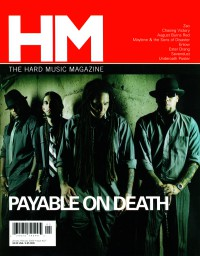

CMnexus
: Contemporary Christian culture, music, and media.
|
|
HM, Jan / Feb 2006, #117
| Cover |
|---|
|  | | Writers in this Issue |
|---|
Allen, Nate
Buchanan, Jamie
Callaway, Chris
Crabb II, Kemper B.
Farries, Sam
Francz, Chris
Frazier, Dan
Haley, Lee
Hallila, Tim
Hudson, Tim
Kid, Kern County
MacIntosh, Dan
Nelson, Jon
Newcomb, Brian Quincy
Powell, Austin
Stagg, David
Tindell Jr., Darren
Troutman, Chris
Tucker, Greg
Van Pelt, Doug
|
Cover Feature:
- "Dream Is Our Middle Name"
Article:Interview:
- "A Close Second To Billy The Kid..." by Lee Haley
Hardnews: Quick & Concise:Hardnews:So & So Says....:Heaven's Metal:Album Review:Live Report:
- Austin City Limits Music Festival by Doug Van Pelt
Devotions by Greg Tucker
The Christian and Art: "A Few Observations On Worship, Part 7, Worship Wars" by Kemper B. Crabb II
Poster: |
|